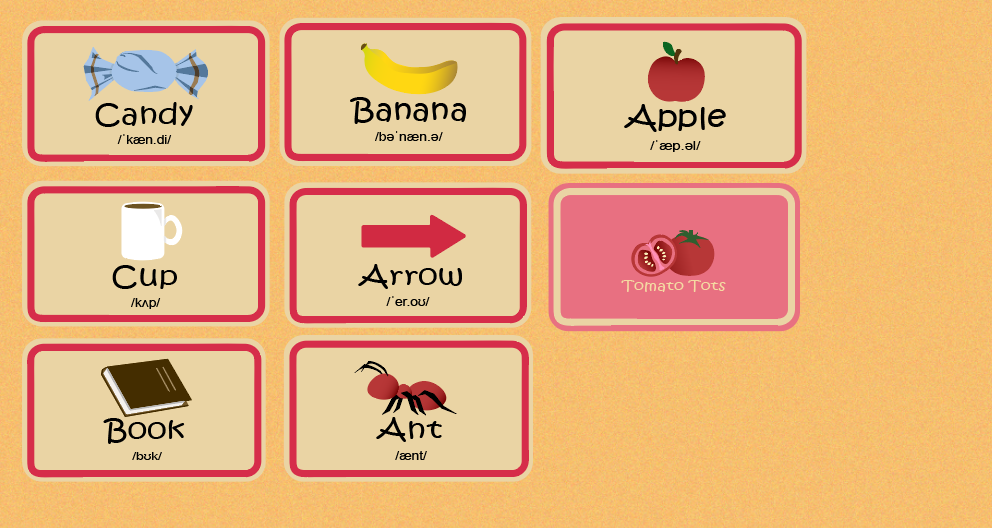
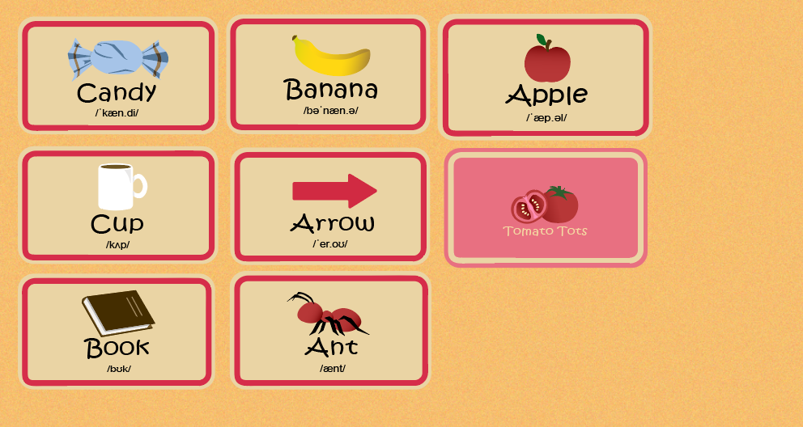

.png)
Visual plan/sketch of the concept

Background design
Some cards design
Course name: Specialization 2 - Interface Design and Development
Course code: COMM2751
Student name: Vo Ngoc Truc Vy
Student ID: s4044874
My project, Tomato Tots, is an interactive webpage made for children to learn letters and words in a fun way. Each letter acts as a button — when clicked, a card flips to reveal a picture, the word, and an audio recording of how the word is pronounced. Clicking again shows a different word that starts with the same letter.
The name Tomato Tots was chosen because it is playful, rhymes, and is easy for children to remember. It also connects to a simple, everyday theme that kids can relate to, making the learning environment feel friendly and familiar.
The idea is to combine visual learning (images, letters) with auditory learning (sound), making it easier for kids to connect letters with words.
Visual plan/sketch of the concept
Background design
Some cards design
The prototype is developed with HTML, CSS, and JavaScript.
For peer testing (Week 8), I provided these prompts:
Feedback: I received several pieces of feedback addressing different issues, but the common theme was that users really appreciated the aesthetic—the illustrations and overall theme were praised and well-loved. However, a major problem identified was layout inconsistency: buttons and cards did not stay in their intended positions across different screen sizes, and for some users, this made it difficult or impossible to interact with the website.
Reflection: In the next iteration, I will focus on improving the layout to ensure all interactive elements and the background remain consistent when resizing the screen. This may involve adjusting the layout structure or implementing techniques to maintain element positions across different resolutions. The positive reception of the aesthetics will be preserved while improving functionality and responsiveness.